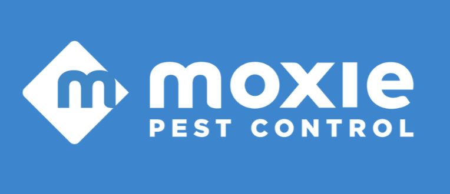

Education
Bachelor of Science in Mechanical Engineering
Brigham Young University - Idaho
Sept 2021 - Present
Rexburg, ID
• Third year of college
• Utilized SolidWorks to model a fork, spoon, car wheel, exhaust manifold, and a swivel joint
• Relevent Classes: Calculus 1 & 2, Physics 1 & 2, Parametric Mechanical CAD (SolidWorks), Engineering Computation (Excel and Python), Strength of Materials, Statics, Dynamics, Intro to Programming, and Intro to Web Design (HTML and CSS)
Extra Curricular
Society of Manufacturing Engineers
• Learned safety in machine shops
• Used a CNC Wire EDM machine to create a stainless steel fork

Work Experience
Transition Year Internship
Amgen
Dun Laoghaire, Ireland
• Trained to use AutoCAD and observed construction management
• Entered a grade three clean room and earned quality control inspection and warehousing processes
Busser
Lupe Tortilla
July 2022 - Aug 2022
Cedar Park, TX
• Learned to work hard by taking on responsibilities included cleaning and sanitizing tables, washing and stacking dishes, cleaning kitchen and bathrooms, and taking out trash
• Learned communication and teamwork skills with managers and coworkers
Private Contractor
Delta Millworks
Jan-Mar & Aug-Dec 2022
Austin, TX
• Set up and operated machinery such as drum sanders, bandsaw, planers, brush machines, paint sprayer machines, and torch machines for manufacturing of high-quality facade cladding
• Ensured quality of product by inspecting each piece before packaging

Sale Representitive
Moxie Pest Control
May - July 2025
Savage, MD
• Learned communication and sales skills by selling pest control door to door
• Learned hard work and persistance
Volunteer Work

Full-Time Volunteer Representitive
The Church of Jesus Christ of Latter-day Saints
Dec 2022 - Nov 2024
Antipolo, Philippines
• Learned to fluently speak the Tagalog language in two years to support members and local church leaders and introduce new people into church
• Led several groups of up to twelve men and women including Filipinos, Americans, and Polynesians and instructed weekly two hour training meetings
• Managed over 60 different rental properties of volunteers by negotiating opening, renewal and closing of rental contracts, coordinated repairs of apartments, and trained volunteers on proper care of accommodations
• Systemized bimonthly distribution of teaching and other materials to over 140 volunteers, and organized domestic and international travel of homecoming missionaries